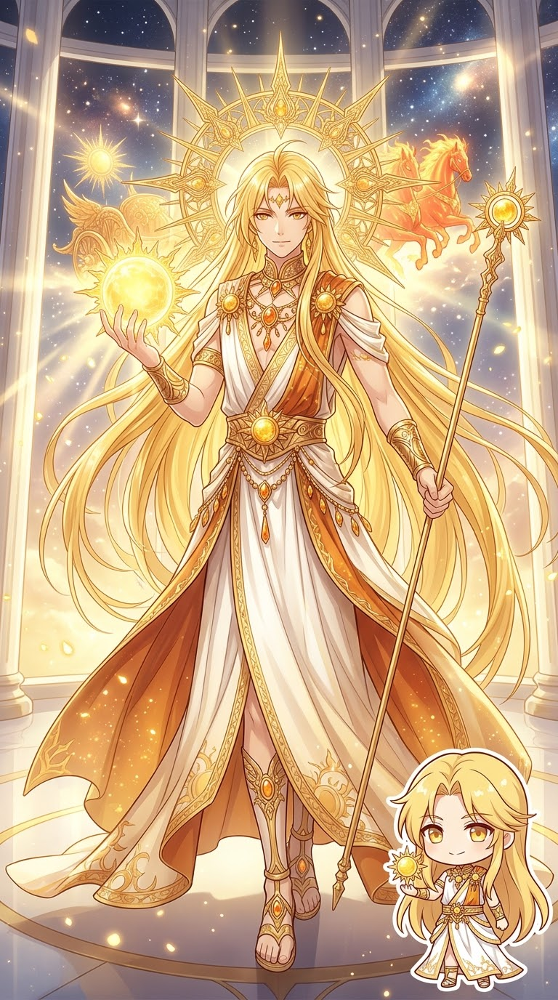
00 · GREEK MYTHOLOGY
Ἥλιος｜赫利俄斯｜Helios
太陽神
赫利俄斯每天駕駛耀眼的太陽戰車穿越天空，從東方升起、向西方落下，讓光明照遍大地。他的光芒也使他成為能看見遠方秘密的神祇；在德墨忒耳尋找珀耳塞福涅時，赫利俄斯便提供了重要線索。
赫利俄斯的牛群受到特別保護。奧德修斯的同伴擅自宰殺神牛後，赫利俄斯向宙斯求助，最終船員遭到懲罰。
DESCENDANTS OF THE TITANS · GODS AND THEIR STORIES
泰坦的子女與孫輩將神話帶向太陽、月亮、星辰、風、河流、魔法與人類命運。沿著六條家族支系，認識每位神祇的力量與經歷。
泰坦後裔並不只是一張親子名單。他們駕駛太陽與月亮的戰車，迎接黎明；有人為人類帶來火，有人承擔天空的重擔；有人守護荒野與神諭，也有人化身河流，或在冥界之河旁見證眾神的誓言。
以下依照六條主要家族支系整理。每個人物都附上形象與故事，讓讀者能從家族關係一路讀到他們的重要經歷。
FAMILY LINE 01
太陽、月亮與黎明｜這對泰坦將天光化為三位神祇：赫利俄斯駕駛太陽戰車，塞勒涅照亮夜空，厄俄斯則開啟每一個黎明。

00 · GREEK MYTHOLOGY
太陽神
赫利俄斯每天駕駛耀眼的太陽戰車穿越天空，從東方升起、向西方落下，讓光明照遍大地。他的光芒也使他成為能看見遠方秘密的神祇；在德墨忒耳尋找珀耳塞福涅時，赫利俄斯便提供了重要線索。
赫利俄斯的牛群受到特別保護。奧德修斯的同伴擅自宰殺神牛後，赫利俄斯向宙斯求助，最終船員遭到懲罰。
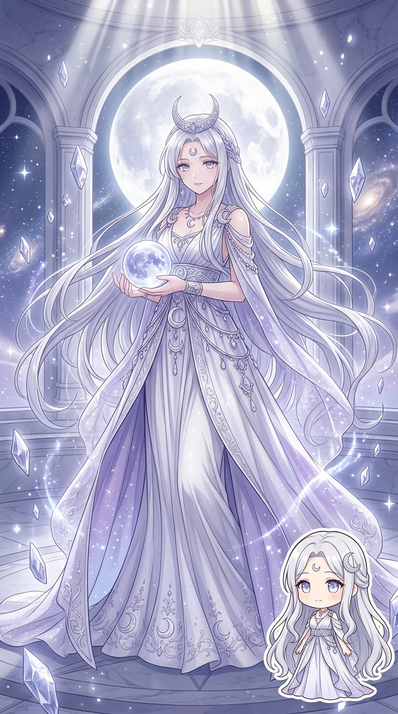
01 · GREEK MYTHOLOGY
月亮女神
塞勒涅駕著月亮戰車穿越夜空，以銀白光芒照亮大地。她常被描寫為頭戴月冠、乘坐由馬匹牽引的戰車，讓夜晚不再只是黑暗，也有溫柔而神祕的光。
她最著名的愛情故事與凡人恩底彌翁有關。塞勒涅深深愛上沉睡的恩底彌翁，常在夜裡前去探望他，使月光與永恆睡夢成為這段故事的象徵。
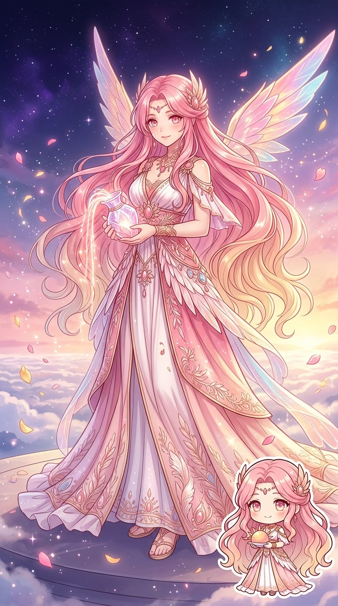
02 · GREEK MYTHOLOGY
黎明女神
厄俄斯每天在太陽神出發前升上天空，以玫瑰色的手指推開黑夜，宣告新的一天開始。她是黎明的化身，常被描寫為長著翅膀、身披金紅色光芒的女神。
厄俄斯曾愛上凡人提托諾斯，請求宙斯賜他永生，卻忘了同時請求青春永駐。提托諾斯因此不斷衰老，這段故事提醒人們：永生若沒有青春，也可能成為沉重的命運。
FAMILY LINE 02
天空的重擔、火與人類命運｜四位兄弟各自走向不同的命運：阿特拉斯承擔天空，普羅米修斯為人類帶來火，厄庇墨透斯迎來潘朵拉，墨諾提俄斯則因傲慢與力量受到宙斯懲罰。
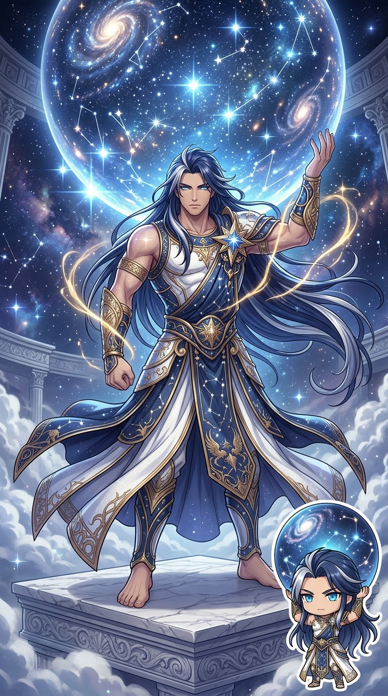
00 · GREEK MYTHOLOGY
承擔天空的泰坦後裔
阿特拉斯站在世界西方的邊界，在泰坦戰爭後受到宙斯懲罰，被迫以雙肩支撐天空。後世藝術常畫他扛著地球，但古希臘神話裡，他承擔的是天穹，而非現代地球儀。
赫拉克勒斯尋找金蘋果時，曾請阿特拉斯代為取果，自己暫時承擔天空。阿特拉斯回來後不想再接回重擔，赫拉克勒斯便巧妙請他先幫忙調整位置，趁機把天空交還給他。
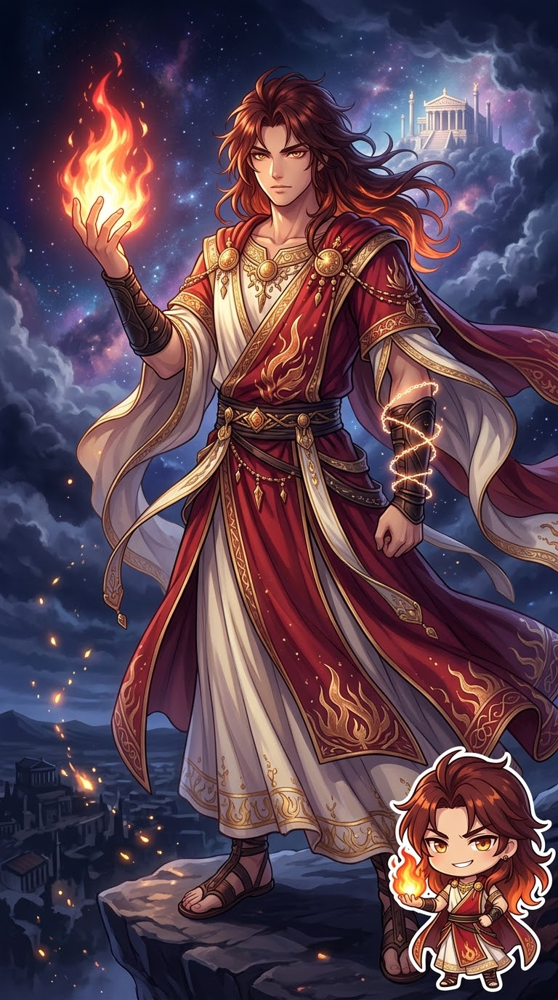
01 · GREEK MYTHOLOGY
智謀之神，為人類帶來火種
普羅米修斯以聰明與遠見聞名。他在祭祀分配中設計宙斯，使人類能保留較好的肉食部分；宙斯因而收走人間的火。普羅米修斯又偷偷取得火種交給人類，讓人們能取暖、烹煮食物、鍛造工具並發展文明。
宙斯為了懲罰他，把他鎖在高山上，讓猛禽每日啄食他的肝臟，而肝臟又會再生。後來赫拉克勒斯解救了普羅米修斯。這個故事使他成為犧牲自身、以智慧改變人類命運的象徵。
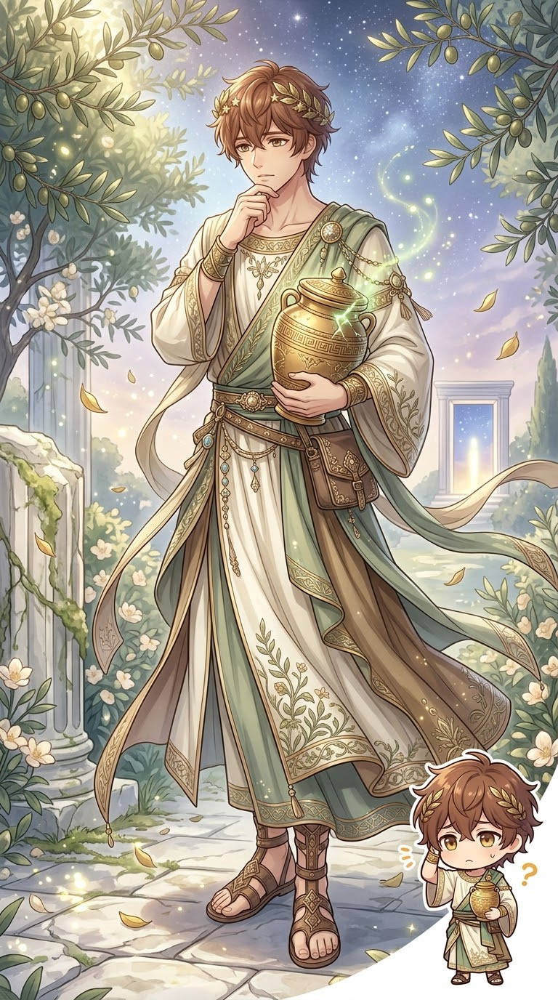
02 · GREEK MYTHOLOGY
事後才明白的泰坦後裔
厄庇墨透斯的名字常被理解為「事後思考」，與兄長普羅米修斯的先見之明形成對照。普羅米修斯曾提醒他不要接受宙斯送來的禮物，但厄庇墨透斯仍迎娶了潘朵拉。
潘朵拉打開容器後，疾病、辛勞與各種苦難散入人間，只有希望留在其中。這段神話用兄弟截然不同的性格，解釋人類為何面對苦難，也為潘朵拉的故事留下深刻轉折。
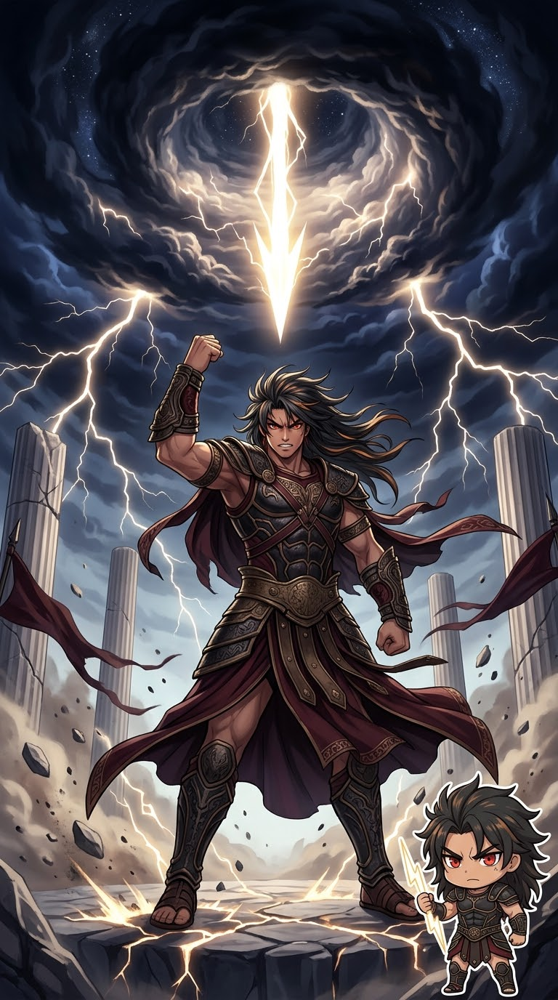
03 · GREEK MYTHOLOGY
因傲慢與暴烈力量而遭懲罰的泰坦後裔
墨諾提俄斯是伊阿佩托斯之子，也是阿特拉斯、普羅米修斯與厄庇墨透斯的兄弟。他以強悍、驕傲與不受節制的力量聞名，站在反抗宙斯的一方。
泰坦戰爭中，宙斯以雷霆擊中墨諾提俄斯，將他打入厄瑞玻斯的幽暗之中。這個結局與阿特拉斯承擔天空、普羅米修斯遭受鎖縛的命運並列，展現四兄弟面對宙斯時各自不同的下場。
FAMILY LINE 03
神諭、光明、狩獵與夜的魔法｜科俄斯與福柏的女兒勒托與阿斯忒里亞，將這個家族連到奧林帕斯最重要的神祇之一：阿波羅、阿耳忒彌斯，以及掌管魔法與十字路口的赫卡忒。
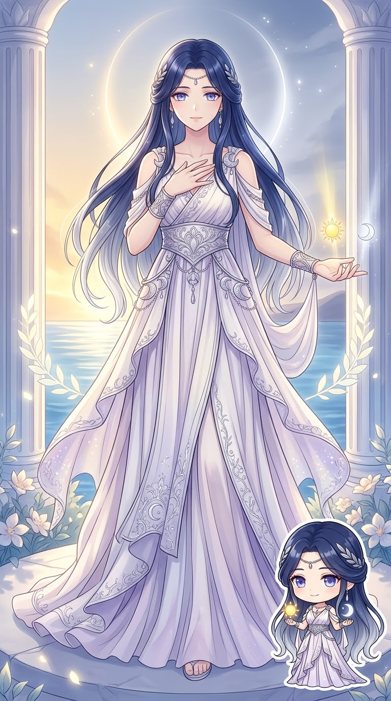
00 · GREEK MYTHOLOGY
阿波羅與阿耳忒彌斯的母親
勒托是溫柔而堅韌的女神。她與宙斯相愛並懷有雙胞胎後，遭到赫拉嫉恨與追逐，許多地方都不敢接納她。最後，她在漂浮的提洛島生下阿波羅與阿耳忒彌斯。
勒托歷經艱難仍保護孩子長大。成年後的阿波羅成為光明、音樂與神諭之神，阿耳忒彌斯成為狩獵與荒野女神。勒托因此是兩位重要奧林帕斯神祇的母親，也象徵母愛與忍耐。
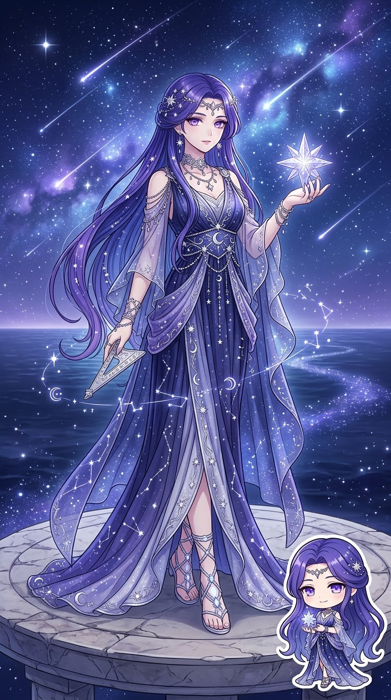
01 · GREEK MYTHOLOGY
星辰與夜空意象的女神，赫卡忒之母
阿斯忒里亞與星辰、夜空及預兆相連。為了逃避宙斯的追求，她化作鵪鶉並投身海中，後來成為名為奧爾提吉亞的島嶼；這座島後來與勒托生下雙胞胎的提洛島傳說相連。
阿斯忒里亞與珀耳塞斯結合，生下赫卡忒。她的故事把星辰、夜間預兆與女兒的魔法神格連在一起，讓這條家族支系從明亮的太陽與月亮延伸到神祕的夜之力量。

02 · GREEK MYTHOLOGY
光明、音樂、預言與弓箭之神
阿波羅是勒托與宙斯之子，手持弓箭，並以里拉琴、歌唱、預言與神諭聞名。他在德爾斐擊敗巨蛇皮同，建立著名神諭聖地，讓人們前來詢問神意與命運。
阿波羅的故事也有悲劇與競技：他曾追逐達芙妮，卻因她變成月桂樹而無法得到愛情；他也與凡人或神祇比試音樂，顯示神的才華既耀眼，也可能伴隨驕傲與懲罰。

03 · GREEK MYTHOLOGY
狩獵、荒野、野生動物與月夜女神
阿耳忒彌斯是阿波羅的孿生姊妹，擅長弓箭，守護荒野與野生動物，也保護年輕少女。她常帶著弓箭、與鹿同行，穿梭於森林、山嶺與無人踏足的自然之地。
她的神話展現了對界線與承諾的堅持。獵人阿克泰翁偶然看見她沐浴，遭她變成鹿，最後被自己的獵犬追逐；尼俄柏因傲慢嘲笑勒托的子女，也受到阿波羅與阿耳忒彌斯的嚴厲報復。
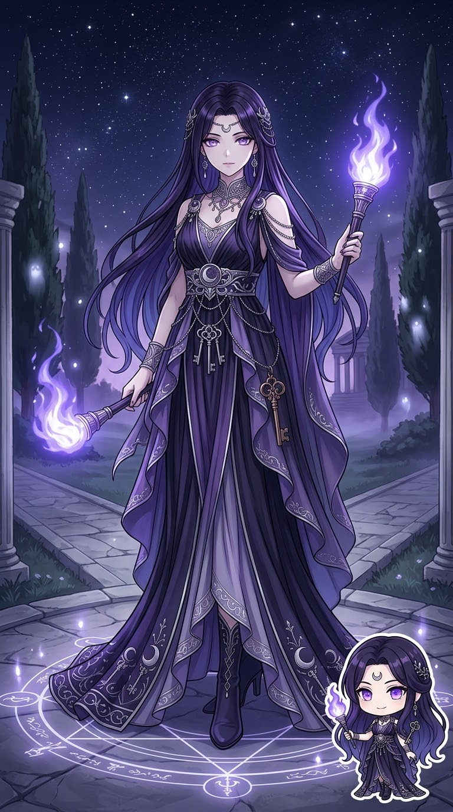
04 · GREEK MYTHOLOGY
魔法、夜晚、十字路口與門檻女神
赫卡忒是阿斯忒里亞與珀耳塞斯之女，與夜晚、火炬、魔法、十字路口及通往冥界的門檻相連。她常手持火炬，在黑暗中照亮道路，也在不同世界的交界處引路。
當哈帝斯帶走珀耳塞福涅時，赫卡忒聽見她的呼喊，拿著火炬協助德墨忒耳尋找女兒。後來她也成為冥界與人間之間的重要引導者。她的形象兼具神祕、守護與邊界力量。
FAMILY LINE 04
星辰、戰鬥、勝利與破壞力量｜三位子女分別代表不同的強大力量。阿斯特賴俄斯與黎明結合，生下風神與星辰；帕拉斯的家族延伸出勝利、熱忱、力量與強力；珀耳塞斯則與阿斯忒里亞生下赫卡忒。
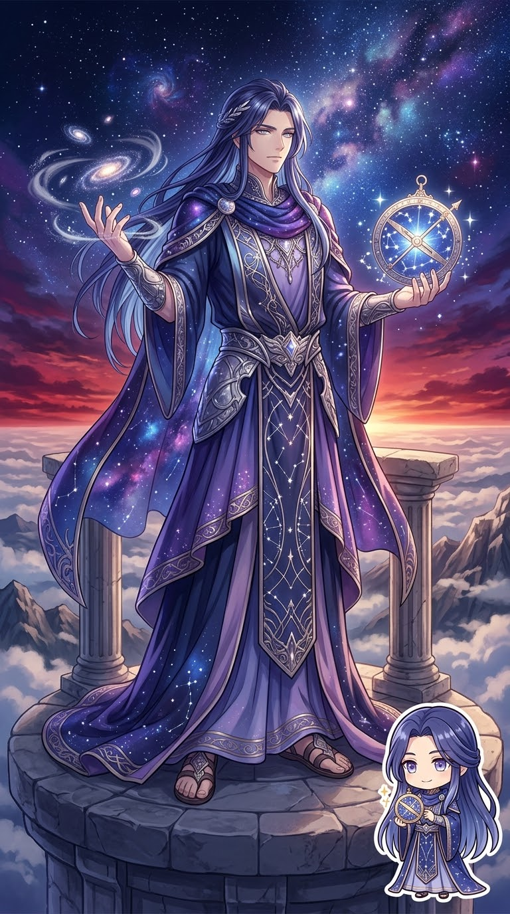
00 · GREEK MYTHOLOGY
星辰與黃昏的泰坦後裔
阿斯特賴俄斯是克里俄斯與厄律比亞之子，與黎明女神厄俄斯結合。他們的子女包括風神玻瑞阿斯、諾托斯、仄費羅斯與埃俄羅斯，以及晨星與其他星辰的神格。
阿斯特賴俄斯的家族把夜空與大氣的變化聯繫起來。風的方向、晨星的出現與天色的轉換，都成為有神祇參與的自然秩序。
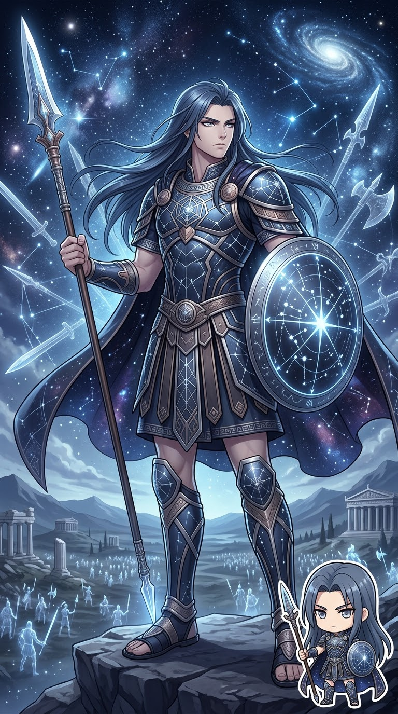
01 · GREEK MYTHOLOGY
戰鬥、戰術與戰技的泰坦後裔
帕拉斯是克里俄斯與厄律比亞之子，與戰鬥、戰技及戰略力量相連。他與冥河女神斯堤克斯結合，子女包括尼刻（勝利）、克拉托斯（力量）、比亞（強力）與澤洛斯（熱忱）。
當宙斯與泰坦交戰時，斯堤克斯率領子女支持宙斯。這些子女後來成為宙斯身邊的力量象徵，讓帕拉斯的家族與勝利、堅毅及神王的權威緊密相連。
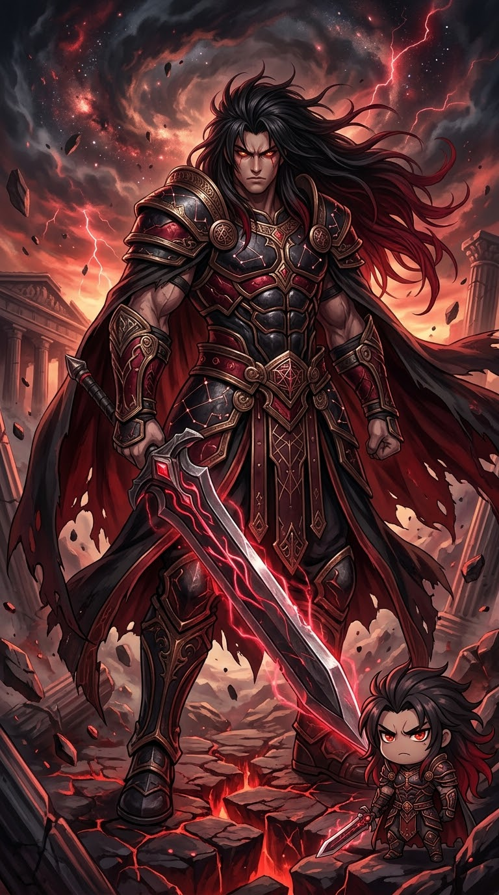
02 · GREEK MYTHOLOGY
與破壞性力量相連的泰坦後裔
珀耳塞斯是克里俄斯與厄律比亞之子，與危險、破壞性力量及強大的神祕能量相連。他與阿斯忒里亞結合，生下赫卡忒，使這支家族延伸至魔法、夜晚與冥界門檻的神話。
珀耳塞斯本人的個人冒險並不多，但他的家族關係十分關鍵：女兒赫卡忒在尋找珀耳塞福涅的故事中手持火炬協助德墨忒耳，後來成為連結人間與冥界的重要女神。
FAMILY LINE 05
河流、泉水與神聖誓約之河｜這對泰坦孕育大量河神與海洋神女。水域神族遍布世界，既滋養土地，也守護河流、泉水與神祇必須遵守的誓言。
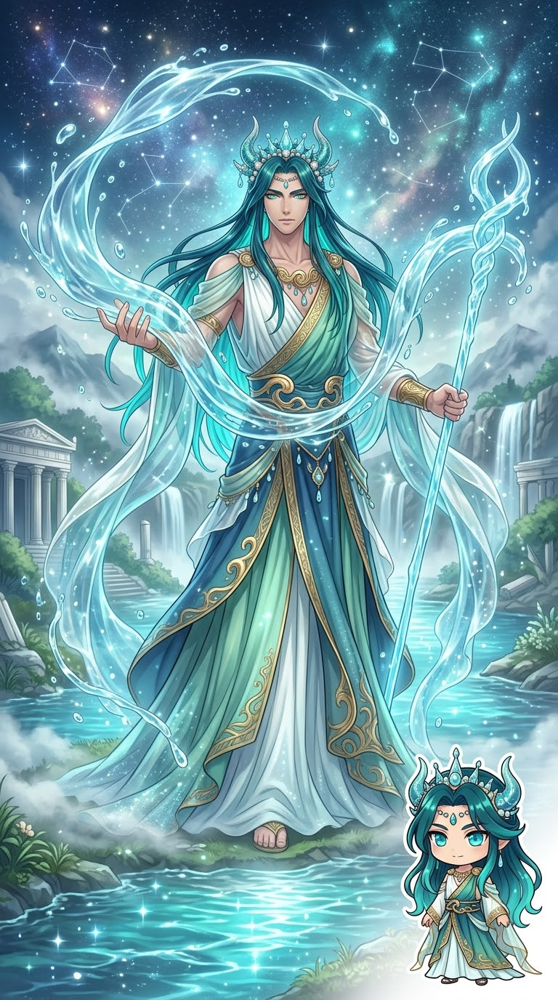
00 · GREEK MYTHOLOGY
著名河神，河流力量的化身
阿刻羅俄斯是希臘神話中最重要的河神之一，象徵河水強大而不受拘束的力量。他曾與赫拉克勒斯爭奪得伊阿尼拉，戰鬥中多次變形，甚至化作公牛，最後被赫拉克勒斯折斷一角。
後來，阿刻羅俄斯以一隻豐饒之角換回自己的角，這個故事也讓河神與豐饒、滋養土地的力量相連。他既是能造成洪流的強大對手，也是讓土地富饒的生命之源。
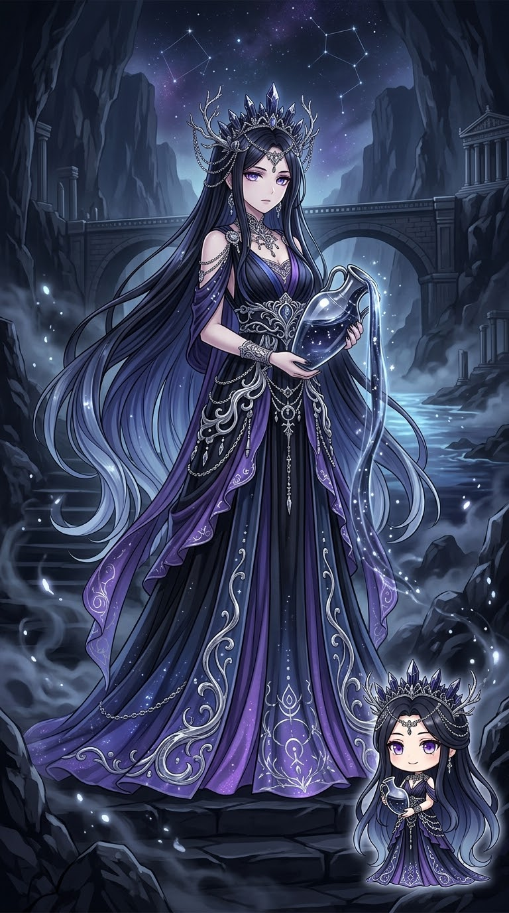
01 · GREEK MYTHOLOGY
冥河女神，眾神神聖誓約的見證者
斯堤克斯是俄刻阿諾斯與忒堤斯之女，也是冥界之河的女神。泰坦戰爭時，她率領子女支持宙斯；宙斯為了回報她的忠誠，賦予她極高的榮譽，使眾神立下最嚴肅的誓言時必須以斯堤克斯之水為證。
若神祇以斯堤克斯立誓卻違背承諾，便會受到嚴厲的神聖懲罰。她的子女尼刻、克拉托斯、比亞與澤洛斯也成為宙斯身邊象徵勝利、力量、強力與熱忱的存在。斯堤克斯因此同時連結冥界、忠誠與不可違背的誓約。
FAMILY LINE 06
這對泰坦生下六位後來掌管天空、海洋、冥界、婚姻、農業與家宅的重要神祇。這一代的故事延續了父子相爭，也開啟奧林帕斯諸神的時代。

00 · GREEK MYTHOLOGY
泰坦之王
克洛諾斯推翻父親烏拉諾斯後成為神王，卻因預言自己的孩子會奪走王位而吞下每一個新生兒。瑞亞以石頭替代宙斯，讓最小的孩子逃過吞噬，最終長大並救出兄姊。
這場父子衝突引發泰坦戰爭，宙斯取得勝利後建立奧林帕斯的新秩序。

01 · GREEK MYTHOLOGY
奧林帕斯六神的母親
瑞亞看著克洛諾斯吞下自己的孩子，最後決定保護新生的宙斯。她以石頭騙過丈夫，將真正的嬰兒秘密送往安全之處，成為宙斯推翻泰坦王朝的關鍵。
她的六名子女是赫斯提亞、德墨忒耳、赫拉、哈帝斯、波塞頓與宙斯，後來分別與家宅、農業、婚姻、冥界、海洋與天空的統治相連。
赫斯提亞 Hestia：守護爐灶、家宅與家庭中的安定。
德墨忒耳 Demeter：掌管穀物與農業；女兒珀耳塞福涅被哈帝斯帶往冥界後，她悲傷得令大地失去收成，最後形成四季循環的神話。
赫拉 Hera：婚姻與王權女神，也是宙斯的妻子。她常因宙斯的情感糾葛而與其情人及子女衝突。
哈帝斯 Hades：冥界之王，統治亡者的國度，與塔耳塔洛斯這座深淵牢獄不同。
波塞頓 Poseidon：海神，掌管海洋、地震與馬匹；他的三叉戟能掀起風暴，也能撼動大地。
宙斯 Zeus：天空與雷霆之神，率領兄姊戰勝泰坦，成為眾神之王，維持神界秩序。
THE FAMILY TREE CONTINUES
一位神祇的故事，往往會延伸到另一位神祇的命運：普羅米修斯的火種改變人類生活，勒托的苦難帶來阿波羅與阿耳忒彌斯，阿斯忒里亞與珀耳塞斯的結合則誕生赫卡忒；斯堤克斯的忠誠，讓她的子女成為宙斯的重要力量。這些故事共同構成了從原初宇宙、泰坦王朝到奧林帕斯時代的神話世界。
回到原初神 →重讀第一代泰坦神 →